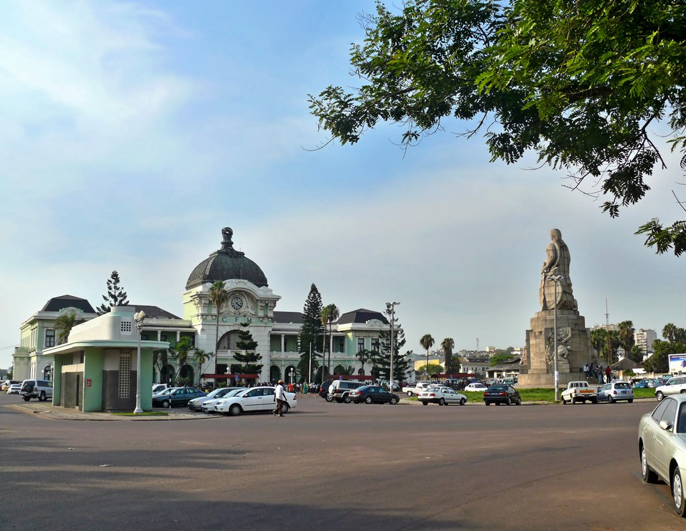
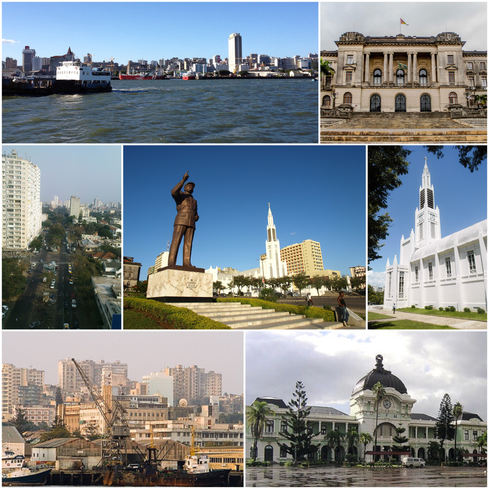
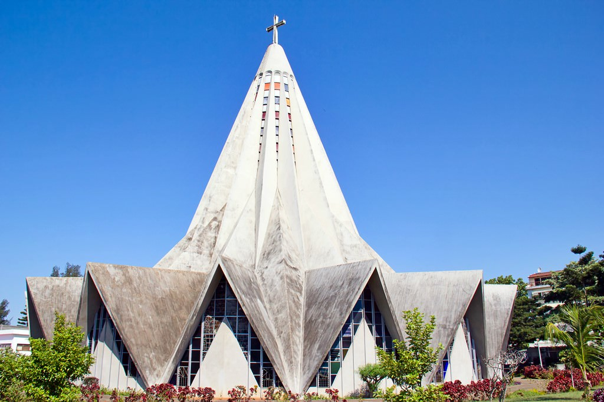

Мапуту – столиця і найбільше місто Мозамбіку, розташоване на півдні країни. Великий порт на березі Індійського океану, економічне життя столиці сконцентроване в районі гавані. Офіційно населення становить близько 1.3 мільйони чоловік, але в реальності воно значно перевершує вказане число через велику кількості жителів, що проживають в нетрях міста. Мапуту поділяється на 7 муніципалитетів: KaMpfumo, Nlhamankulu, KaMaxaquene, KaMavota, KaMubukwana, KaTembe, KaNyaka.
Місто засноване в кінці XVIII століття, отримало назву Лоренсу Маркеш на честь португальського торговця Лоренсу-Маркеша, що дослідив узбережжя в 1544 році. У 1895 була побудована залізниця, що з'єднала місто з Преторією. Це спричинило швидке зростання населення. У 1898 році місто стало столицею португальського Мозамбіку, змінивши острівне місто Мозамбік та отримало назву Мапуту.
За п’ять століть португальської колонізації місто набуло декількох прикладів португальської архітектури. Більшість популярних будівель – це колишні колоніальні адміністративні будівлі чи нинішні урядові будівлі. Цей сильний художній дух був реалізрваний завдяки залученню деяких найпрогресивніших світових архітекторів на рубежі 20 століття. У місті є шедеври будівельних робіт Панчо Гедеса, Герберта Бейкера, Томаса Хонні тощо. Найдавніші архітектурні зусилля навколо міста були зосереджені на класичних європейських проектах, таких як Центральний залізничний вокзал, спроектований архітекторами Альфредо Аугусто Лісабон де Ліма, Маріо Вейга та Феррейра да Коста, та готель Полана, спроектований Гербертом Бейкером.
В культурному та релігійному планах Мапуту – це суміш декількох культур, проте домінують культури банту та португальська, хоч і відчувається значний вплив арабської, індійської та китайської культур. Серед релігійних осередків наявні переважно християнські церкви та храми: Римо-католицька архієпархія Мапуто (Католицька церква), Реформатська церква в Мозамбіку (Всесвітнє причастя реформатських церков), Igreja Presbiteriana de Moçambique (Всесвітнє спілкування реформованих церков), Конвенсаон Баптиста de Moçambique (Баптистський Всесвітній союз), Універсальна Церква Царства Божого, Асамблеї Божі, Християнська Церква Сіон тощо. Є також мусульманські мечеті.
